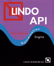

Home
Curriculum
Research Areas
Teaching
Links
Personal
Contacts
Optimization:
-> Softwares
Fico Xpress
Ilog Cplex
AMPL
GAMS

LINDO
-> Test problems
OR-Library
DIMACS Challenges
-> Persons
Michael Trick's Operations Research Page
Alain Hertz
-> Societies
Society for Industrial and Applied Mathematics (SIAM)
Mathematical Programming Society
Institute for Operations Research and the Management Sciences (INFORMS)
Sociedade Brasileira de Pesquisa Operacional
-> Friends and Colleagues (Optimization)
Daniel de Oliveira
Luidi Simonetti
Lucia M. A. Drummont
Luiz Satoru Ochi
Thibaut Vidal
Victor Campos
Ana Shirley Silva
Cid C. de Souza
Rosa Figueiredo
Thiago F. Noronha
Celso C. Ribeiro
Edna A. Hoshino
Manoel Campelo
Phone: +55 (21) 2629-5637
Fax: +55 (21) 2629-5627
yuri (a) ic (dot) uff (dot) br